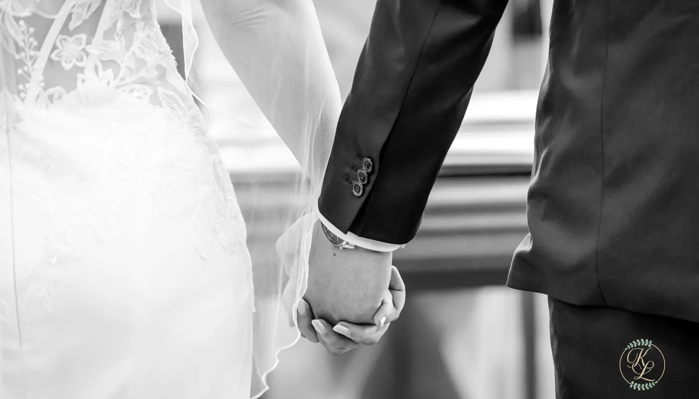
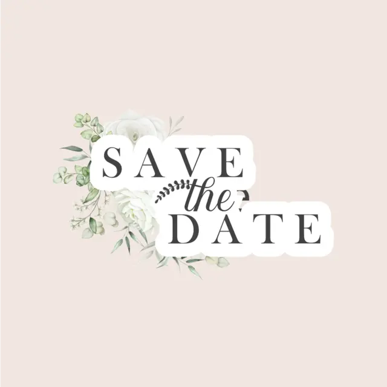
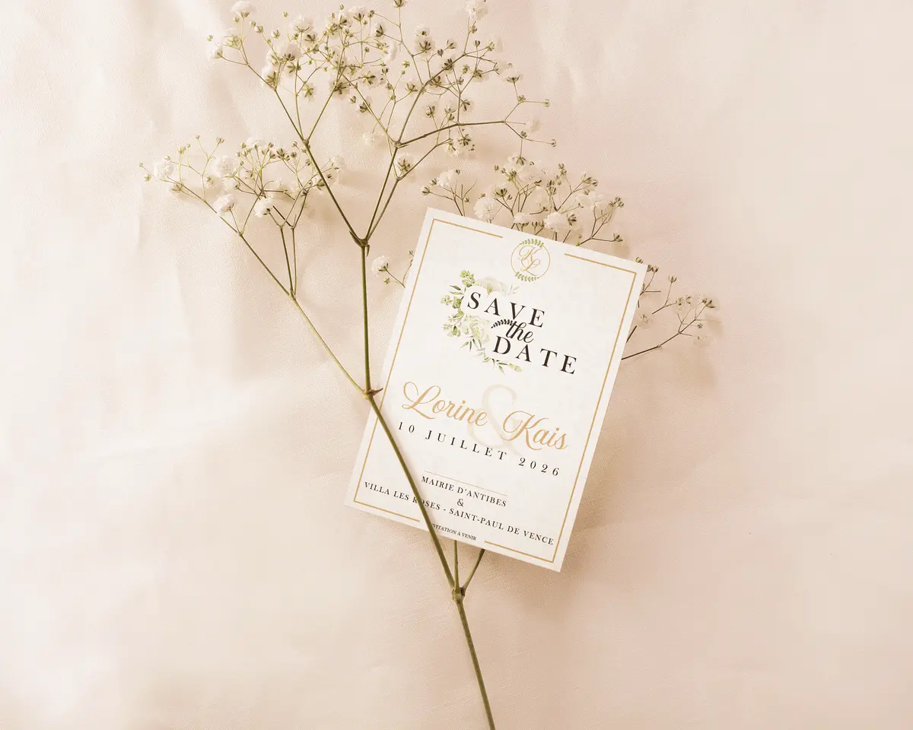
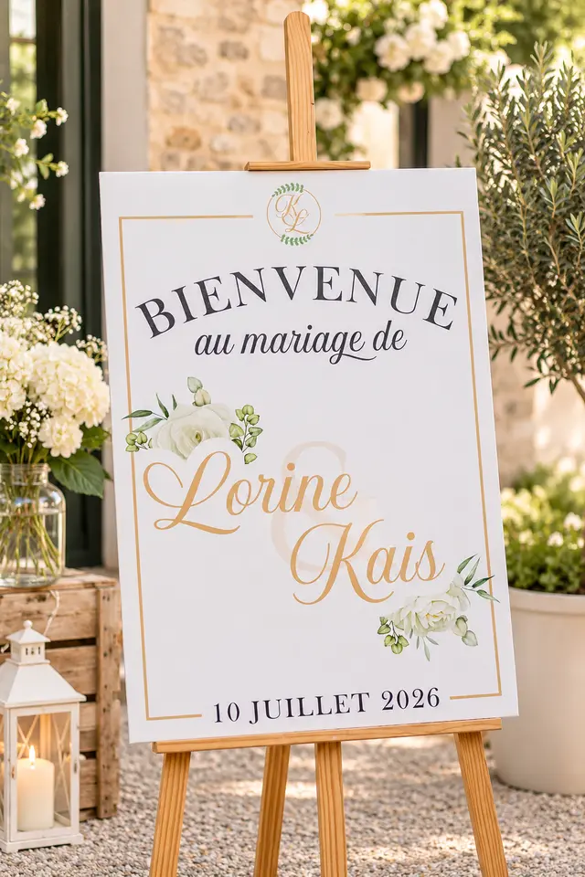
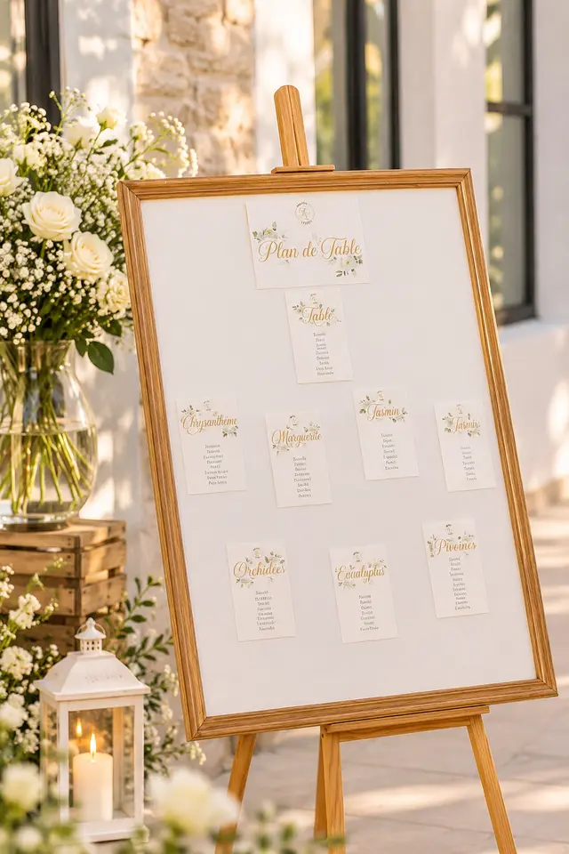
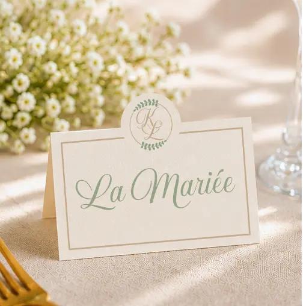
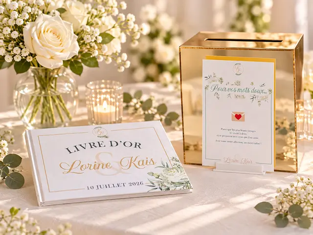
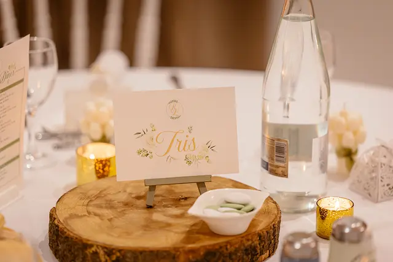

They trusted me
Visual identity · Wedding stationery
Kais & Lorine
One identity, one story
Creation of a personalised visual identity to celebrate the union of Kais & Lorine. A monogram designed to reflect their world and carried across all of the wedding stationery: Save The Date, Invitation, Place cards, Table names, Table plan, Welcome sign, Custom candle with their labels, and Menus.
Items
- Save The Date
- Invitation
- Place cards
- Table names
- Table plan
- Welcome sign
- Custom candle
- Menus
Project visuals









